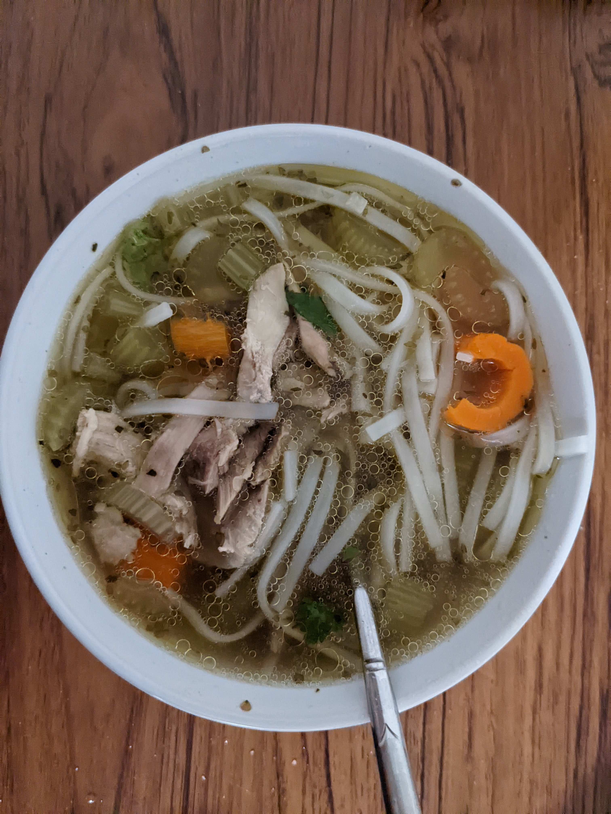

Chicken Soup Recipe

This soup tastes great and is very easy to make. Just throw all the ingredients in a pot and go about your day.
Freeze the leftovers for a quick dinner later in the week!
Servings: 2-3
Time: 1 hour 15 min
Ingredients
- 4 quarts water
- 1 lb frozen chicken
- 2 teaspoons salt
- 1/2 teaspoon pepper
- 1/3 teaspoon ginger
- 1 onion
- 3/4 cup carrots
- 1/2 package rice noodles
- 1 lime
- 1 bunch of cilantro
Steps
- Add water, chicken, pepper, ginger and salt to pot. Set temperature to high.
- Chop carrots and onion, add to pot. Let mixture cook for approximatly 1 hour.
- About 15 mins before the broth is done prepare and cook the rice noodles in a separate pot, rinse noodles in cold water once they are done.
- Add the noodles to serving bowls and top with broth, lime juice and cilantro leaves as desired.
- Enjoy!
Home